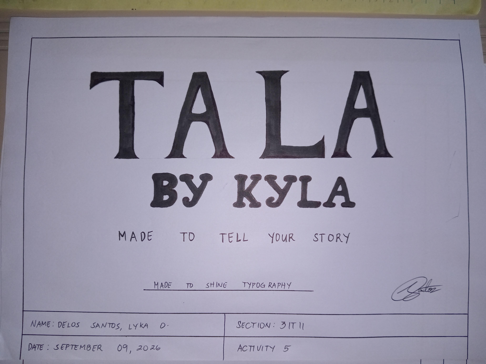
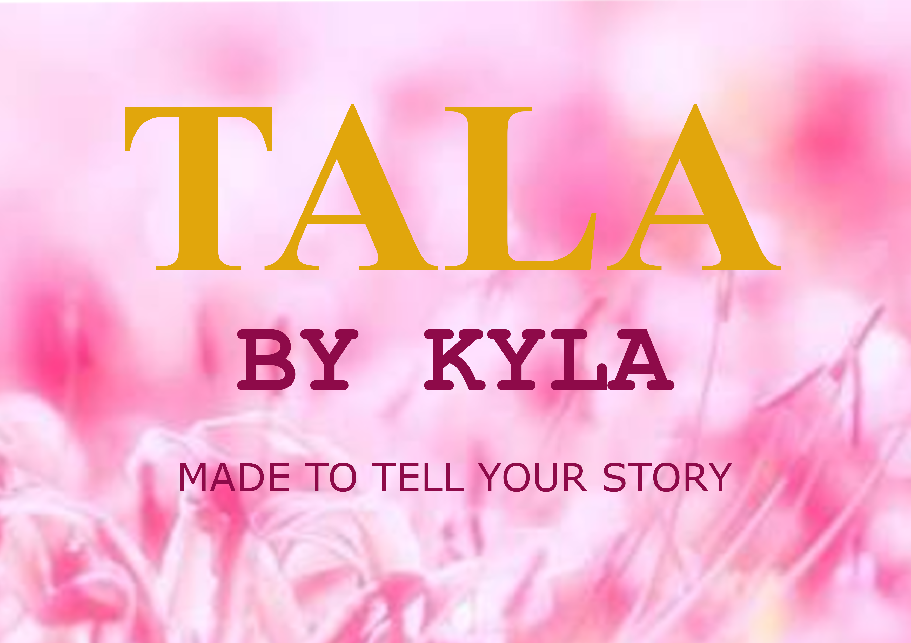

← Back to Projects
← Back to Projects
← Back to Projects
← Back to Projects
ACTIVITY 5
A typography design concept that combines elegance and creativity to express the identity of Tala by Kyla through meaningful lettering.
Tala by Kyla is a typography design project inspired by a local Philippine jewelry brand. The activity focuses on creating a distinctive visual identity through the use of typography, font styles, and creative presentation. The design aims to communicate elegance, personality, and the meaningful stories behind jewelry.
STAGE 01
This is my initial sketch before transforming it into digital art.

The first stage of the project, where I planned the composition, layout, and overall appearance of my design.
STAGE 02
Here is the finished digital version of my work.

The completed design after applying colors, typography, visual elements, and other design improvements.
For this activity, I developed a typographic concept for Tala by Kyla, using bold serif lettering to create a sophisticated and recognizable brand identity. I incorporated the tagline "Made to Tell Your Story" to emphasize the personal meaning and stories that jewelry can represent. The design also explores the importance of font selection, letter arrangement, and visual balance in building a brand's identity.